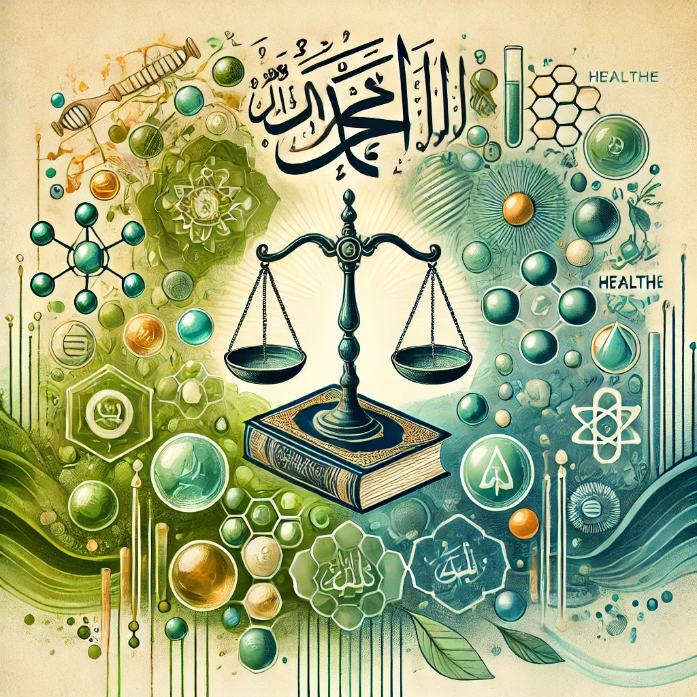

الأحكام الشرعية في الإسلام ليست فقط توجيهات دينية، بل تحمل أيضًا فوائد علمية وصحية واجتماعية يمكن ملاحظتها من خلال الدراسات الحديثة. إليك بعض الأمثلة على الفوائد العلمية للأحكام الشرعية:
1. الصلاة
الفائدة العلمية:
الصلاة تتضمن حركات بدنية مثل الركوع والسجود، والتي تساعد في تحسين الدورة الدموية وتقوية العضلات والمفاصل. كما أن التركيز الذهني والروحاني أثناء الصلاة يمكن أن يقلل من التوتر والقلق.
2. الصيام
الآية: "يَا أَيُّهَا الَّذِينَ آمَنُوا كُتِبَ عَلَيْكُمُ الصِّيَامُ كَمَا كُتِبَ عَلَى الَّذِينَ مِن قَبْلِكُمْ لَعَلَّكُمْ تَتَّقُونَ" [البقرة: 183].
الفائدة العلمية:
الصيام له فوائد صحية مثبتة، مثل تحسين حساسية الأنسولين، وتعزيز عملية الأيض، والمساعدة في التخلص من السموم. كما أن الصيام المتقطع يُستخدم في بعض الأنظمة الغذائية الحديثة لفوائده الصحية.
3. الزكاة
الفائدة العلمية:
الزكاة تعزز من التكافل الاجتماعي وتقلل من الفقر، مما يساهم في استقرار المجتمع. من الناحية النفسية، العطاء يمكن أن يزيد من الشعور بالسعادة والرضا الشخصي.
4. تحريم الخمر
الآية: "يَا أَيُّهَا الَّذِينَ آمَنُوا إِنَّمَا الْخَمْرُ وَالْمَيْسِرُ وَالْأَنصَابُ وَالْأَزْلَامُ رِجْسٌ مِّنْ عَمَلِ الشَّيْطَانِ فَاجْتَنِبُوهُ لَعَلَّكُمْ تُفْلِحُونَ" [المائدة: 90].
الفائدة العلمية:
تحريم الخمر يحمي من العديد من المشاكل الصحية مثل أمراض الكبد، واضطرابات الجهاز العصبي، والإدمان. كما يقلل من الحوادث المرتبطة بتعاطي الكحول.
5. تحريم لحم الخنزير
الآية: "إِنَّمَا حَرَّمَ عَلَيْكُمُ الْمَيْتَةَ وَالدَّمَ وَلَحْمَ الْخِنزِيرِ وَمَا أُهِلَّ لِغَيْرِ اللَّهِ بِهِ" [البقرة: 173].
الفائدة العلمية:
لحم الخنزير يمكن أن يكون مصدرًا للعديد من الأمراض والطفيليات مثل الديدان الشريطية. تحريمه يقي من هذه المخاطر الصحية.
6. الطهارة والوضوء
الفائدة العلمية:
الطهارة والوضوء يساهمان في النظافة الشخصية، مما يقلل من انتشار الأمراض المعدية. غسل اليدين والوجه والأطراف بشكل منتظم هو ممارسة صحية موصى بها عالميًا.
7. الحجاب
الفائدة العلمية:
الحجاب يمكن أن يحمي الجلد من أضرار أشعة الشمس، ويقلل من مخاطر الإصابة بسرطان الجلد. كما أنه يعزز من الشعور بالخصوصية والاحترام الشخصي.
الخاتمة
الأحكام الشرعية في الإسلام ليست فقط توجيهات دينية، بل تحمل أيضًا فوائد علمية وصحية واجتماعية. هذه الفوائد تعكس حكمة التشريعات الإسلامية في تحقيق التوازن بين الروح والجسد والمجتمع. ومع ذلك، يجب أن تُفهم هذه الأحكام في سياقها الديني واللغوي، مع الاعتراف بأن الهدف الأساسي منها هو تحقيق الهداية والرضا الإلهي.